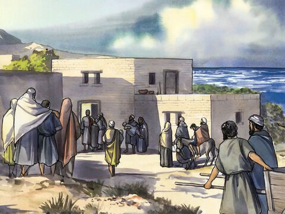
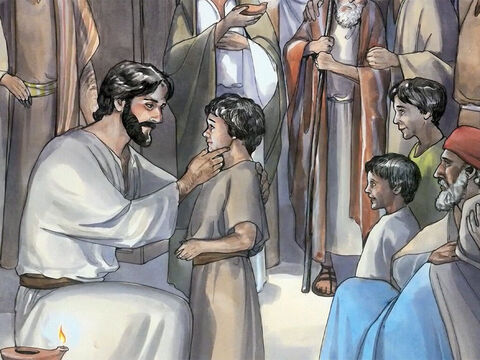
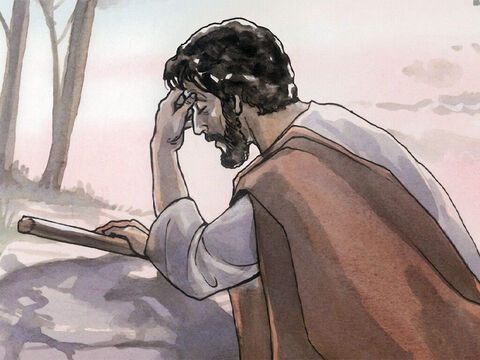
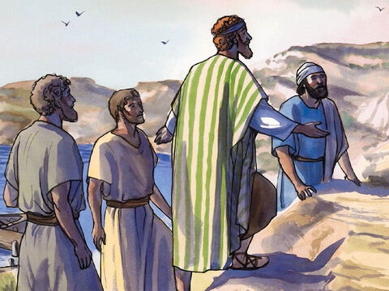

Lord Jesus Heals Many
When the even was come, they brought unto him many that were possessed with devils: and he cast out the spirits with his word, and healed all that were sick:
That it might be fulfilled which was spoken by Esaias the prophet, saying, Himself took our infirmities, and bare our sicknesses.
Matthew 8:16-17
And devils also came out of many, crying out, and saying, Thou art Christ the Son of God. And he rebuking them suffered them not to speak: for they knew that he was Christ.
And when it was day, he departed and went into a desert place: and the people sought him, and came unto him, and stayed him, that he should not depart from them.
And he said unto them, I must preach the kingdom of God to other cities also: for therefore am I sent.
And he preached in the synagogues of Galilee.
Luke 4:41-44
- 
- 
- 
- 